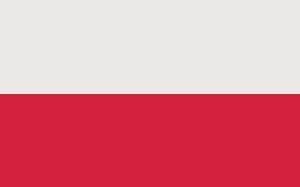

Państwo unitarne w Europie Środkowej, położone między Morzem Bałtyckim na północy a Sudetami i Karpatami na południu, w przeważającej części w dorzeczu Wisły i Odry. Od północy Polska graniczy z Rosją (z jej obwodem kaliningradzkim) i Litwą, od wschodu z Białorusią i Ukrainą, od południa ze Słowacją i Czechami, od zachodu z Niemcami. Większość północnej granicy Polski wyznacza wybrzeże Morza Bałtyckiego. Polska Wyłączna Strefa Ekonomiczna na Bałtyku graniczy ze strefami Danii i Szwecji. Granice z Ukrainą, Białorusią i Rosją stanowią równocześnie granicę zewnętrzną Unii Europejskiej i strefy Schengen.
Powierzchnia administracyjna Polski wynosi 312 696 km², co daje jej 69. miejsce na świecie i 9. w Europie. Zamieszkana przez 38 179 800 ludzi (marzec 2021), zajmuje pod względem liczby ludności 38. miejsce na świecie[15], a 5. w Unii Europejskiej. Polska podzielona jest na 16 województw. Jej największym miastem i jednocześnie stolicą jest Warszawa.
| Powierzchnia |
Ludność |
PKB / os |
Waluta |
| 312 696 km² |
38 179 800 os |
17 318 USD |
Złoty |
Zobacz więcej!